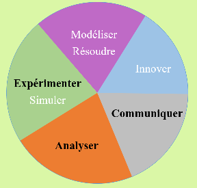

Présentation des compétences et des connaisances associées abordées en spécialité SCIENCES DE L'INGENIEUR pour le cycle terminal.
 Programme de Sciences de l'ingénieurÀ partir des prérequis installés au collège et des enseignements scientifiques communs en classe de seconde, le cycle terminal approfondit de façon qualitative l’analyse des produits d’une complexité croissante et quantifie les performances attendues. Il permet de constituer une large base de connaissances scientifiques et technologiques.
Ainsi, à l’issue du cycle terminal, les élèves sont évalués sur leurs compétences à analyser :
| A_ | Compétences | Connaissances | Les Ressources | |
|---|---|---|---|---|
| A3 | Analyser l'organisation structurelle d’un produit par une démarche d’ingénierie système | Outils d’ingénierie-système : diagrammes SysMl, diagramme de définition de bloc "bdd", diagramme de bloc interne "ibd" | S3 |
La création de produits technologiques a pour objectif de répondre à des besoins et d’obtenir des performances préalablement définies. Les élèves, pour prévoir les performances des solutions développées, construisent des modèles. Ils disposent pour cela des outils numériques, logiciels multi-physiques associés à des modeleurs volumiques. Cela permet de construire des modèles à partir d’une organisation fonctionnelle et matérielle existantes ou imaginées.
Ils disposent aussi d’outils théoriques leur permettant d’établir des équations de comportement de tout ou partie du produit. Pour les élèves du cycle terminal, la résolution des équations issues de la modélisation est conduite à l’aide d’outils numériques. Dans les cas les plus simples, une résolution analytique peut être menée. Elle ne sera réalisée que si elle présente un intérêt pédagogique à l’acquisition et à la compréhension de la démarche scientifique, des lois et concepts associés.
La résolution des équations de comportement et la simulation numérique des modèles multi-physiques permettent de prévoir les grandeurs associées aux performances attendues. Ainsi, à l’issue du cycle terminal, les élèves sont évalués sur leurs compétences à :
| M&R_ | Compétences | Connaissances | Les Ressources | |
|---|---|---|---|---|
| M&R1 | Proposer et justifier des hypothèses ou simplification en vue d’une modélisation | Hypothèses simplificatrices. Modélisation plane | S3 | |
| M&R6 | Modéliser sous une forme graphique une structure, un mécanisme ou un circuit | Circuit électrique. Schéma cinématique. Graphe de liaisons et des actions mécaniques | S3 | |
| M&R7 | Modéliser les mouvements | Trajectoires et mouvement. Liaisons. Torseurs cinématiques. Réciprocité mouvement relatif/actions mécaniques associées | S3 | |
| M&R12 | Déterminer les grandeurs géométriques et cinématiques d’un mécanisme | Positions, vitesses et accélérations linéaire et angulaire sous forme vectorielle. Champ des vitesses. Composition des vitesses dans le cas d’une chaîne ouverte. Loi d’entrée/sortie d’un mécanisme dans le cas d’une chaîne fermée (fermeture géométrique) | S3 |
Pour valider les performances d’un produit, les élèves réalisent des expérimentations et des essais. Ils permettent d’obtenir des valeurs expérimentales de performances à partir du fonctionnement du produit réel. Par ailleurs, ils simulent le fonctionnement d’un produit à l’aide d’outils logiciels qui exploitent les modèles numériques. Les simulations mobilisant les modèles numériques atteignent un haut degré de fiabilité. Elles permettent de réaliser des essais virtuels sur un jumeau numérique qui sont comparables à des expérimentations sur un objet matériel, voire d’effectuer des mesures qui seraient inaccessibles, impossibles ou dangereuses sur l’objet matériel. La comparaison des écarts entre les résultats de simulation, d’expérience et les niveaux attendus est aussi source de multiples réflexions quant à la pertinence du modèle, la pertinence du protocole expérimental ou encore la validité de la solution au regard du cahier des charges.
Ainsi, à l’issue du cycle terminal, les élèves sont évalués sur leurs compétences à :
| E&S_ | Compétences | Connaissances | Les Ressources | |
|---|---|---|---|---|
| E&S1 | Prévoir l’ordre de grandeur de la mesure | Gamme d’appareils de mesure et capteurs | S2 | |
| E&S2 | Identifier les erreurs de mesure | Gamme d’appareils de mesure et capteurs | S2 | |
| E&S3 | Conduire des essais en toute sécurité à partir d’un protocole expérimental fourni | Règle de raccordement des appareils de mesure et des capteurs | S2 | |
| E&S4 | Relever les grandeurs caractéristiques d’un protocole de communication | Caractéristiques des signaux. Protocole, trame. Débit maximal, débit utile | S2 |
Les élèves doivent communiquer avec de nombreuses personnes. Ils échangent avec des non spécialistes pour comprendre leur besoin ainsi qu’avec de nombreux intervenants au sein de l’entreprise et avec des partenaires. Ils sélectionnent des informations pertinentes, ils produisent et présentent des informations relatives à leur activité.
Les élèves proposent des solutions innovantes qu’ils présentent de façon argumentée pour convaincre partenaires et décideurs.
Ainsi, à l’issue du cycle terminal, les élèves sont évalués sur leurs compétences à :
| C_ | Compétences | Connaissances | Les Ressources | |
|---|---|---|---|---|
| C1 | Rendre compte de résultats | Tableau, graphique, diaporama, carte mentale | S2 | |
| C2 | Collecter et extraire des données. Comparer, traiter, organiser et synthétiser les informations pertinentes | ENT, moteurs de recherche, internet, blog, base de données, dossiers techniques | S2 | |
| C4 | Travailler de manière collaborative. Trouver un tiers expert. Collaborer en direct ou sur une plateforme, via un espace de fichiers partagés | Espaces partagés et de stockage, ENT | S2 | |
| C5 | Adapter sa communication au public visé et sélectionner les informations à transmettre. Scénariser un document suivant le public visé | Média, outils multimédia, outils bureautiques, carte mentale, diagramme de l'ingénierie-système, schéma, croquis, prototype | S2 |
Les élèves doivent communiquer avec de nombreuses personnes. Ils échangent avec des non spécialistes pour comprendre leur besoin ainsi qu’avec de nombreux intervenants au sein de l’entreprise et avec des partenaires. Ils sélectionnent des informations pertinentes, ils produisent et présentent des informations relatives à leur activité.
Les élèves proposent des solutions innovantes qu’ils présentent de façon argumentée pour convaincre partenaires et décideurs.
Ainsi, à l’issue du cycle terminal, les élèves sont évalués sur leurs compétences à :
| I_ | Compétences | Connaissances | Les Ressources |
|---|